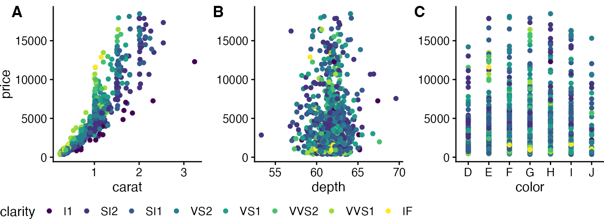
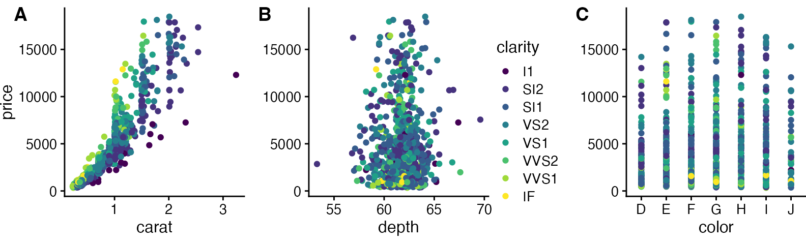
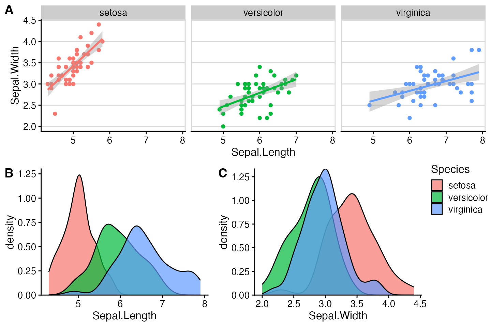

Shared legends
Claus O. Wilke
2019-07-10
shared_legends.RmdThis vignette demonstrates how to make compound plots with a shared legend.
We begin with a row of three plots, without legend.
library(ggplot2)
library(cowplot)
library(rlang)
# down-sampled diamonds data set
dsamp <- diamonds[sample(nrow(diamonds), 1000), ]
# function to create plots
plot_diamonds <- function(xaes) {
xaes <- enquo(xaes)
ggplot(dsamp, aes(!!xaes, price, color = clarity)) +
geom_point() +
theme_half_open(12) +
# we set the left and right margins to 0 to remove
# unnecessary spacing in the final plot arrangement.
theme(plot.margin = margin(6, 0, 6, 0))
}
# make three plots
p1 <- plot_diamonds(carat)
p2 <- plot_diamonds(depth) + ylab(NULL)
p3 <- plot_diamonds(color) + ylab(NULL)
# arrange the three plots in a single row
prow <- plot_grid(
p1 + theme(legend.position="none"),
p2 + theme(legend.position="none"),
p3 + theme(legend.position="none"),
align = 'vh',
labels = c("A", "B", "C"),
hjust = -1,
nrow = 1
)
prowNow we add the legend back in manually. We can place the legend to the side of the plots.
# extract the legend from one of the plots
legend <- get_legend(
# create some space to the left of the legend
p1 + theme(legend.box.margin = margin(0, 0, 0, 12))
)
# add the legend to the row we made earlier. Give it one-third of
# the width of one plot (via rel_widths).
plot_grid(prow, legend, rel_widths = c(3, .4))
Or we can place the legend at the bottom.
# extract a legend that is laid out horizontally
legend_b <- get_legend(
p1 +
guides(color = guide_legend(nrow = 1)) +
theme(legend.position = "bottom")
)
# add the legend underneath the row we made earlier. Give it 10%
# of the height of one plot (via rel_heights).
plot_grid(prow, legend_b, ncol = 1, rel_heights = c(1, .1))
Or we can place the legend between plots.
# arrange the three plots in a single row, leaving space between plot B and C
prow <- plot_grid(
p1 + theme(legend.position="none"),
p2 + theme(legend.position="none"),
NULL,
p3 + theme(legend.position="none"),
align = 'vh',
labels = c("A", "B", "", "C"),
hjust = -1,
nrow = 1,
rel_widths = c(1, 1, .3, 1)
)
# now add in the legend
prow + draw_grob(legend, 2/3.3, 0, .3/3.3, 1)
One more example, now with a more complex plot arrangement.
# plot 1
p1 <- ggplot(iris, aes(Sepal.Length, Sepal.Width, color = Species)) +
geom_point() +
stat_smooth(method = "lm") +
facet_grid(. ~ Species) +
theme_half_open(12) +
background_grid(major = 'y', minor = "none") +
panel_border() +
theme(legend.position = "none")
# plot 2
p2 <- ggplot(iris, aes(Sepal.Length, fill = Species)) +
geom_density(alpha = .7) +
scale_y_continuous(expand = expand_scale(mult = c(0, 0.05))) +
theme_half_open(12) +
theme(legend.justification = "top")
p2a <- p2 + theme(legend.position = "none")
# plot 3
p3 <- ggplot(iris, aes(Sepal.Width, fill = Species)) +
geom_density(alpha = .7) +
scale_y_continuous(expand = c(0, 0)) +
theme_half_open(12) +
theme(legend.position = "none")
# legend
legend <- get_legend(p2)
# align all plots vertically
plots <- align_plots(p1, p2a, p3, align = 'v', axis = 'l')
# put together the bottom row and then everything
bottom_row <- plot_grid(
plots[[2]], plots[[3]], legend,
labels = c("B", "C"),
rel_widths = c(1, 1, .3),
nrow = 1
)
plot_grid(plots[[1]], bottom_row, labels = c("A"), ncol = 1)